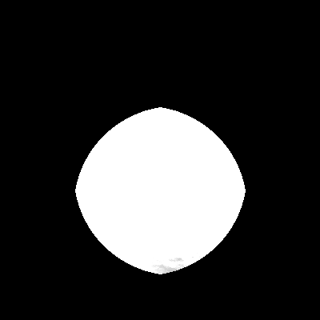
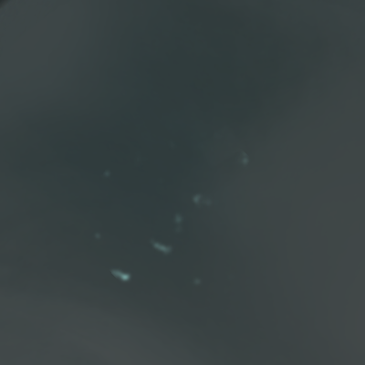
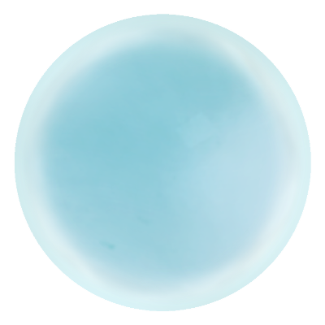
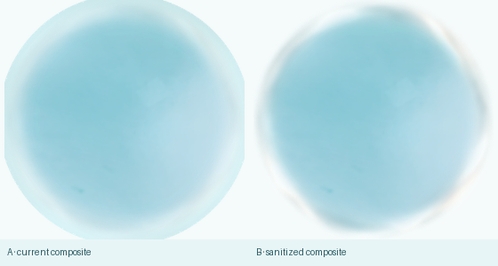
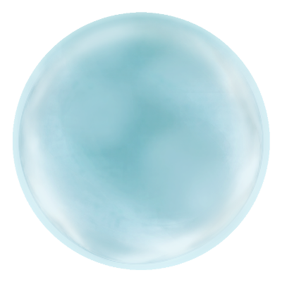

M1.4 DONOR INTERIOR NORMALIZATION
FINAL ART 离线 donor baking · verification only · M1.3 closed as experiment · 不改 production · 不进入 M2
SOURCE
FINAL_ART_025 继续作为 offline derivation donor；本轮只从其 safe interior 提取 material vocabulary。FINAL_ART_050 仍为 depth / thickness guide，FROZEN_K2 仍为 endpoint authority，D K0 仍为 neutral restraint。最终 RGB 不再携带 donor sphere / shell topology。


VOLUME
无 alpha 时不能读出完整 donor sphere、shell arc 或第二颗球。

body alpha 只由 interior ownership 提供，最终边界交给 formal silhouette / film。
horizontal bend + vertical bend + diagonal shear + local stretch。
DETAIL



SHELL OWNERSHIP

body coverage + attenuated formal film。

interior body falloff + full formal outer-film source alpha。

FORMAL SHELL OWNERSHIP = BLOCKED
正式 outer-film source 未修改，也没有全局乘 0.34；M1.4 通过 interior-body falloff 让 shell zone 由 formal film 接管；但 full source alpha 仍形成过强连续高亮环，无法确认与 FINAL_ART_025 optical context 一致。
正式 outer-film source 未修改，也没有全局乘 0.34；M1.4 通过 interior-body falloff 让 shell zone 由 formal film 接管；但 full source alpha 仍形成过强连续高亮环，无法确认与 FINAL_ART_025 optical context 一致。
RESULT
CURRENT M1.4 DONOR HERO · STATIC
BEFORE / AFTER
